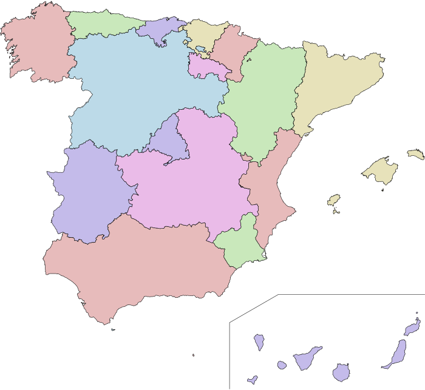
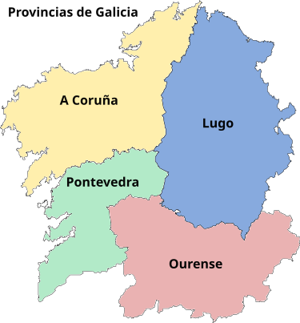

Como se organizan os países e as empresas. Como nos podemos organizar nós para que a tenda do colexio funcione mellor: con xefatura, subxefatura e un equipo con responsabilidades.
Imaxina por un momento que mañá chegas á clase e o profesor di: "hoxe ninguén manda, ninguén decide, ninguén se respecta". Que pasaría no recreo? E ao escribir? E ao querer falar?
Sen normas
Manda sempre o máis forte. Os demais non poden falar nin participar. Reina o caos.
Con normas xustas
Cada quen sabe que pode facer e que non. Hai turnos, espazos compartidos e respecto.
Decidimos xuntos
Cando hai dúbida, falamos, votamos e damos voz á maioría sen pisar á minoría.
!
Stop & pensa
Que tres normas mínimas porías na túa clase para que funcione todo o ano?
Anota mentalmente as túas tres. Despois compárteas co compañeiro/a do lado.
01 · Vivir en sociedadeCA3.1
Vivir en sociedade non é estar só.
Unha sociedade somos moitas persoas convivindo. Compartimos lingua, costumes e normas, pero non somos todas iguais. Para que funcione hai tres ingredientes básicos:
Organización
Alguén coordina. Países teñen goberno, empresas teñen xefatura.
Normas
Acordos para vivir xuntos. Chámanse leis a nivel país, regras na clase.
Respecto
A diversidade é riqueza, non problema. Cada quen aporta algo.
Decidir falando, escoitando
!
Stop & pensa
Sen normas: que pasaría no comedor do colexio?
02 · Diversidade e igualdadeCA3.1 · CA3.2
Iguais en dereitos, distintos en todo o demais.
Persoas con culturas, linguas, xéneros e idades distintas comparten o mesmo territorio. As leis garanten que todas e todos teñamos os mesmos dereitos.
Que é a diversidade?
É a mestura de culturas, linguas, idades, capacidades e xéneros nunha sociedade. En Galicia falamos galego e castelán, e tamén veñen veciñas e veciños doutros países.
Igualdade de xénero
Mulleres e homes teñen os mesmos dereitos e oportunidades. Non hai traballos, deportes ou cargos só "para nenas" ou só "para nenos".
+ Linguas que escoitamos en España
Castelán — oficial en toda España
Galego — oficial en Galicia
Catalán — oficial en Cataluña, Illes Balears e Comunidade Valenciana (como valenciano)
Eúscaro — oficial no País Vasco e parte de Navarra
Aranés — oficial no Val d'Aran (occitano)
Aplicación á tenda
Calquera pode ser xefe/a, rapaza ou rapaz.
Os roles repártense por interese e capacidade, non por xénero.
Atendemos por igual a todos os cursos.
Se vén alguén que fala outra lingua, axudámoslle igual.
Sabías?
As mulleres españolas non puideron votar ata 1933. A deputada Clara Campoamor foi quen máis loitou por ese dereito.
03 · Resolver conflitosCA3.3
Cando hai conflito: diálogo, non pelexa.
Toda sociedade ten desacordos. O que diferencia unha democracia é como os resolve: falando, escoitando e usando normas xustas. En España, as normas básicas están na Constitución.
Diálogo
Escoita antes de falar. Linguaxe respectuosa. Pedir axuda a un terceiro se non hai acordo.
Constitución 1978
Texto cos dereitos e deberes de toda a cidadanía. Define España como Estado social e democrático de dereito.
Dereitos que sempre temos
Educación · sanidade · expresión libre · voto (cando temos idade) · non ser discriminados por sexo, lingua ou orixe.
Eleccións libres e secretas
Microquiz · 03
Hai un conflito no recreo: dous compañeiros queren o mesmo xogo. Que é o máis democrático?
Toca unha resposta.
04 · Sistemas de gobernoTeoría
Quen manda? Tres formas básicas.
Sociedades organizáronse de moitas maneiras ao longo da historia. Hoxe hai tres grandes familias:
Quen toma as decisións?
Sistema 1
Democracia
O poder está na cidadanía.
Vótase para elixir representantes.
Hai eleccións cada poucos anos.
EX. España, Francia, Portugal…
Sistema 2
Monarquía
O xefe do Estado é un rei ou raíña.
Se é parlamentaria, o rei reina pero non goberna.
Se é absoluta, o rei manda en todo.
EX. España, Reino Unido (parlamentaria)
Sistema 3
Ditadura
Manda unha persoa ou grupo só.
Non hai eleccións libres.
Limítanse os dereitos.
EX. España viviu unha ditadura ata 1975.
Microquiz · 04
Cal é o sistema de goberno actual de España?
Toca unha resposta.
05 · España hoxeCA3.3 · CA3.4
España é unha democracia desde 1978.
Desde a Constitución de 1978, España é unha monarquía parlamentaria: hai un rei como xefe de Estado (Felipe VI), pero quen goberna é un Presidente elixido nas urnas. España forma parte da Unión Europea desde 1986.
Constitución
Aprobada en 1978. Dereitos, deberes e organización do Estado.
Estado de dereito
Ninguén está por riba das leis, nin sequera o goberno.
Antes da Constitución, España viviu case 40 anos baixo unha ditadura (1939–1975). Non se podía votar, nin haber partidos políticos, nin imprimir libros que criticasen o goberno. O galego foi prohibido nos colexios e nos rótulos oficiais. Por iso é tan importante lembrar e protexer a democracia que custou tanto conseguir.

GaliciaCapital: Madrid
Mapa España · 17 CCAA + 2 cidades autónomas
!
Stop & pensa
Antes de 1978 non había Constitución. Que tres cousas que hoxe fas a diario non poderías facer?
06 · Órganos de gobernoCA3.4
Goberno por niveis: do concello á UE.
Catro niveis
O poder non está nun só sitio. Repártese en catro niveis para que cada cousa se decida o máis preto da xente posible. Cada nivel ocúpase do que mellor coñece.
Concello
Lixo, parques, festas, deporte municipal. No teu caso: Meaño.
Xunta
Educación, sanidade e medio ambiente. Sede en Santiago.
Estado
Exército, xustiza, moeda, transporte estatal. Sede en Madrid.
Unión Europea
Comercio, euro e leis comúns. Sede en Bruxelas.
Microquiz · 06
Que nivel decide se hai novos parques infantís ou un polideportivo no Coirón, Dena?
Toca unha resposta.
07 · Galicia, as nosas instituciónsCA3.4
Galicia ten goberno propio.
Galicia é unha das 17 comunidades autónomas. Ten o seu Estatuto de Autonomía (1981), a súa lingua propia (galego), as súas institucións e os seus símbolos.
Parlamento
75 deputadas e deputados elixidos polo pobo. Sede no Pazo do Hórreo, en Santiago. Aproban as leis galegas.
Xunta
É o goberno. Préside o Presidente da Xunta. Inclúe as consellerías (Educación, Sanidade, Cultura, Mar…).
+ Símbolos de Galicia
Bandeira: branca cunha banda azul diagonal.
Himno: Os Pinos, letra de Eduardo Pondal.
Día das Letras Galegas: 17 de maio.
Día de Galicia: 25 de xullo.

A Coruña · Lugo · Ourense · Pontevedra (a túa)
08 · Do país á empresaPonte
Un país é, no fondo, unha organización enorme.
As regras que serven para gobernar un país tamén serven para gobernar unha empresa ou unha tenda. Cambian os nomes, pero o esquema é o mesmo: dirección, áreas e equipos.
NO PAÍS
Presidente/a · dirixe o goberno
Ministros/as · cada área (sanidade, educación…)
Funcionariado · executa o día a día
Cidadanía · elixe e supervisa
NA EMPRESA
Dirección / CEO · dirixe a empresa
Xefes/as de área · cada departamento
Equipo · fai o produto ou servizo
Clientela · merca e opina
!
Stop & pensa
Na túa familia, quen sería o "presidente"? E os "ministros" de cada cousa (cociña, compras, deberes…)?
09 · Repaso · Que aprendiches?Quiz
Comprobemos o aprendido.
Pregunta 1
En España, quen aproba as leis?
Toca unha resposta.
Pregunta 2
Que diferenza unha democracia dunha ditadura?
Toca unha resposta.
Pregunta 3
A Constitución española aprobouse en:
Toca unha resposta.
10 · A tenda necesita gobernarseAplicación
A Tenda Sostible é unha mini-empresa.
Prestamos xogos no recreo e para a casa. Para que funcione cada día, alguén ten que abrir, anotar, reparar, comunicar e decidir. Copiamos o modelo dunha empresa: xefatura, departamentos e equipo.
Dirección
Xefe/a · Subxefe/a
Departamento
Tesourería
Departamento
Comunicación
Departamento
Inventario
Departamento
Atención
11 · Os 6 roles da TendaOrganigrama
Cada quen, o seu papel.
Rol 1
Xefe / Xefa
Dirixe reunións, toma a decisión final, representa a tenda.
1 persoa · por voto
Rol 2
Subxefe / Subxefa
Substitúe á xefatura, coordina departamentos, supervisa acordos.
1 persoa · por voto
Rol 3
Tesourería
Moedas-tenda, anotacións e balance semanal.
2 persoas
Rol 4
Comunicación
Carteis, anuncios e buzón de suxestións.
2 persoas
Rol 5
Inventario
Estado dos xogos, reparacións e novas incorporacións.
2 persoas
Rol 6
Atención
Apertura nos recreos, explicación e axuda á clientela.
3 persoas
12 · Tarefa final · 1 semana
Eleccións na clase. Repartimos os cargos da tenda.
Vamos vivir nós mesmos un proceso democrático: candidaturas, debate, voto secreto, reconto público e toma de posesión.
1
Candidaturas
Quen queira ser xefe/a presenta mini-programa de 3 ideas.
2
Debate
Cada candidatura defende en 1 minuto.
3
Voto secreto
Cada persoa vota nunha papeleta sen nome.
4
Reconto
Conta pública diante de todos. Transparencia.
5
Toma de posesión
A xefatura asigna departamentos. Comeza o curso da tenda.